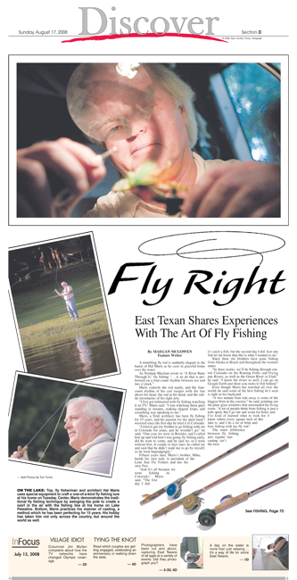
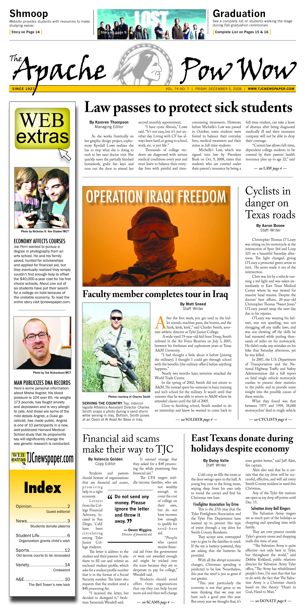
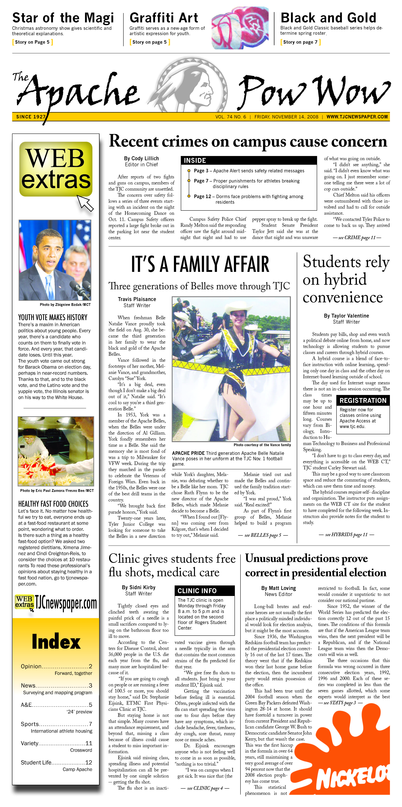
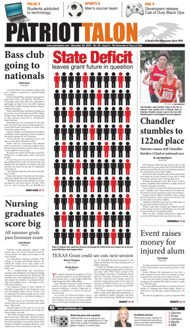
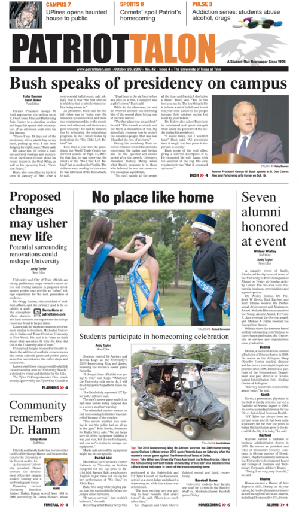
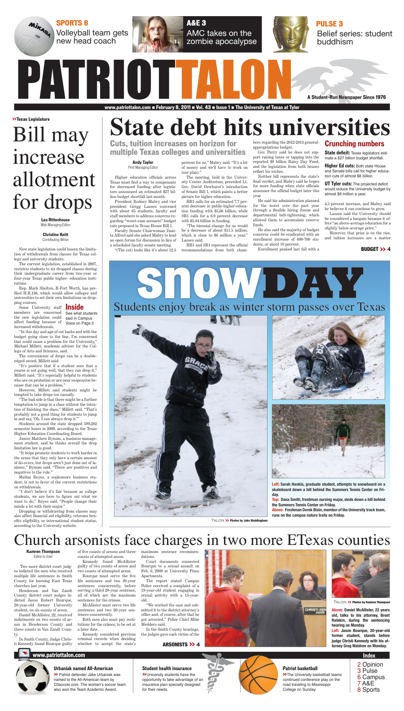
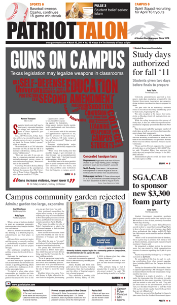

Reporting and editing
Page design
Photo journalism
I earned my first professional byline at 16, launching my career in journalism early. I interned at my community’s weekly newspaper, where I reported news and feature stories, and later served as editor-in-chief of the student newspapers at both Tyler Junior College and the University of Texas at Tyler. I also completed a copy desk internship at Tyler’s daily newspaper, gaining hands-on experience in editing and production.
I graduated with a B.S. in Journalism from the University of Texas at Tyler in 2012, and since then I’ve continued writing, contributing blog and digital content to various online publications.
Page Design







Patriot Talon | December 7, 2010
“Harry Potter and the Deathly Hallows, Part 1” is the beginning of the end for the widely successful movie adaptation.
The movie is the first part of the last installment of J.K. Rowling’s famous Harry Potter book series, and director David Yates does a great job following the sequence of the book.
The first scenes bring viewers to the Ministry of Magic, where the sinister tone of the movie is set.
Soon after, we meet the leading trio, Harry Potter (Daniel Radcliffe), Hermione Granger (Emma Watson) and Ron Weasley (Rupert Grint), followed quickly by a slew of main characters, including the Weasley twins (James and Oliver Phelps), Alastor “Mad-Eye” Moody (Brendan Gleeson), Remus Lupin (David Thewlis) and the villain, Lord Voldemort (Ian Hart).
With this, the trio’s horcrux hunt begins, as the rest of the wizarding world tries to stay out of the crosshairs of or fight against the Death Eaters, who basically have taken over the Ministry of Magic.
I was pleased to again see one of my favorite character translations ever, Dolores Umbride (Imelda Staunton). Staunton did a phenomenal job bringing Umbridge to life in “Harry Potter and the Order of the Phoenix,” and continues to perfect her on-screen personality.
Some have criticized the series for being too dark for its intended audience, but the dramatic, ominous tension really makes this movie.
One of the darkest scenes takes place at Malfoy Manor. Bellatrix Lestrange (Helena Bohnam Carter) may have been torturing Hermoine, but she definitely does not torture the audience with her stellar performance.
The same cannot be said for poor Draco Malfoy (Tom Felton). Even after acting in six other Harry Potter films, he is still the worst actor known to man, wizard or muggle.
Most of the other young actors seem to find their places in the dramatic roles, but at times it seems like they were too focused on the drama, failing at most of the humor. A majority of it seems forced and unnatural.
The film does an acceptable job balancing the horrible events going on in the wizarding world and the characters’ attempts to continue living normal, somewhat happy lives.
One thing this movie definitely has over the previous ones is special effects. It is by far the most visually pleasing Harry Potter movie.
There were a few instances of less than impressive special effects, but as a whole, it was a very striking film.
A specific visually appealing scene is the recounting of “The Tale of the Three Brothers and the Deathly Hallows.” Instead of keeping it live action, the film creators chose an animated sequence narrated by Hermione. At first, I was skeptical, but as I watched, I really enjoyed the animation.
Perhaps the most impressive aspect of the movie is its adaptation of the book. It can’t be simple to make a 759-page book with crazy, expensive-to-bring-to-life magic into two movies.
This book specifically must have been difficult because quite a few of those 759 pages follow the trio, as they pout in the forest, trying to think of a plan to defeat the Dark Lord.
Overall, the adaptation, visualizations and acting make “Harry Potter and the Deathly Hallows, Part 1” the best of the eight-part series.
The eighth and final movie, “Harry Potter and the Deathly Hallows, Part 2,” is set for release in July.
Apache Pow Wow | October 3, 2008
As she walked nervously into the unfamiliar environment, sophomore Karen Hernandez noticed the overpowering smell of cleaning products and examined the unconventional art adorning the walls. She reviewed all the questions she wanted to ask; excitement and adrenaline swept over heras she approached the tattooed man behind the counter.
Thousands of college students walk into tattoo studios every day and walk out as permanent pieces of art. Tyler Junior College students as well as some of Tyler’s most well-known artists reveal their experiences and advice about tattoos.
Paul Masson, owner of Lil Paul’s Tattoos in downtown Tyler, has been branding people with ink for about 14 years and said he can’t imagine doing anything else.
“Every day is something new. Every tattoo is a challenge, but I work on people like I want them to work on me.”
For someone who has never gotten a tattoo, the first question seems to always be, “will it hurt?” Obviously, an individual’s pain tolerance differs, but the majority of people said it didn’t hurt badly, unless it was on an area of skin close to bone.
However, John Manfood of Lil Paul’s Tattoos said otherwise.
“I answer this question 200 times a day. The top of the head is the worst,” Manfood said. “It’s really all the same. Different people believe what different
people are told. Because your brother said it hurt when he got it over a bone, it’s going to hurt when you get it over a bone. It’s all in your head.”
While tattoos sometimes get a bad rap for spontaneous decisions made on a whim, many students claimed the exact opposite, saying you have to be mentally prepared to get the tattoo.
Sophomore Ben Huffine said he carried the design in his pocket for months before actually getting the tattoo. He said that when he felt he was ready, he wanted to be able to do it right then. Sophomore Joyle Rosenberg agreed with Huffine.
“You have to build up,” Rosenberg said. “If you aren’t sure you want one when you walk in, you probably won’t get it.”
Sophomore Janie Jacksonnalso prepared for her first tattoo – for years actually.
“I had wanted one for like two or three years before I was 18. So I was begging and bugging my mom to death, and she said, ‘if you still want it when
you turn 18, we will go get one.’” So on my 18th birthday, we skipped school and went over there to get it together,” Jackson said. “I wasn’t nervous, because I had wanted it for such a long time.”
While the majority of people said they got their first tattoo at age 18, Paul said people of all ages come to the shop on a regular basis.
“I would say anywhere from 20 to, believe it or not, older people like 60 years old. Everybody is getting them.Really, right now, there isn’t an age.”
An unusual story behind a tattoo came from sophomore Mary Tarbutton.
“At 15, me and my best friend left our house and it was when the state fair was in town. We met a couple of cute guys that were running one of the rides. We ended up leaving town with them – and the fair,” Tarbutton said.
“We lied and told them we were 18 and had fake everything to prove that we were not what we really were. We got to Shreveport and there was a tattoo guy set up there. My friend and I picked the design that we wanted. Mine says ‘friends’ and hers says ‘best.’”
Two of the six tattoos that Tarbutton has, she got when she was young and believed she could “conquer the world,” but has since had the two covered, and plans for modifications on another.
Covering tattoos is a viable and common option for 18-year-old spontaneity. Manfood said about half of the work he does is cover-ups and a Kelly’s Tattoos artist said they usually get at least one coverup every day.
Tattoo studios usually have a minimum price for a tattoo. At Lil Paul’s Tattoos, the minimum is $40 to provide the most sanitary conditions.
“It costs about $35 to provide you with new needles and all the safety equipment to do it. So our shop minimum is $40,” Manfood said. “Other people
have a lower shop minimum, but I know it costs 35 bucks to provide a clean tattoo.”
Paul recommends that no one try to tattoo without first completing an apprenticeship.
“There are little scratchers out there spreading diseases because they are sitting at home tattooing,” Paul said. “Doing it at home is really
unsanitary. There are a lot of people that come in to cover up scars from trying to do tattoos themselves.”
Most studios have apprenticeships available for people interested in the art.
“The full apprenticeship is pretty crappy but it’s the aftermath that you work for,” Paul said.
Probably the most well-knownapprentice is Yo j i r o “Yoji” Harada of the TV show Miami Ink. However, Manfood said a real shop is nothing like the show.
“Shows like Miami ink and LA ink… it’s a load of crap. That’s not what shop life is like at all. It’s kind of like an ER nurse watching scrubs. It’s nowhere near what’s going on.” Manfood said. “It’s just fake.”
Blog | September 6, 2011
I have been very busy lately. I escaped from Vault 101, saved people from super mutants, fought the enclave, purified the water in the Washington D.C. area, took a little break, was shot and almost buried alive, killed a legendary deathclaw, may have been responsible for the death of a centuries-old man, and became vilified with the Legion.
I played through Fallout 3 and Fallout New Vegas for the first time. I played Fallout 3 on an Xbox 360 and New Vegas on a PS3. (I know. I know. I need to switch to PC.) Because these games are absurdly huge and full of content, this blog will just scratch the irradiated surface.
What do I do?!
It was the year 2277 when I took my first steps in the desolate American wasteland. I was confused and overwhelmed. The sheer vastness of post-apocalyptic Washington D.C. was almost too consuming. I had no idea what I was supposed to do or where I was supposed to go. Mutated fire-breathing ants were crawling around to the southeast. Giant, intimidating horseshoe-crab-looking creatures lurked around an irradiated river, and scantily clad gangs with crazy hair ran around saying, “I’m going to tear you apart.”
This was my first experience with a non-linear game, and I must admit, I didn’t like it at first. I wanted to know what all the fuss was about though, so I kept playing. At some point, I lost all recollection of time, 2011, and the real world. An hour turned into two, one quest turned into three, and before I knew it, I was totally addicted.
Because I was still so used to a linear style, I worked through a large part of the main quest line before I started roaming the wasteland aimlessly. Once I did, I realized why this game is so amazing.
My character’s name was Nellie Bly. She sported a hot-pink mohawk. With the name, I thought it was only appropriate that she collect cameras. I was a paragon… the last best hope for the wasteland.
D.C. Superlatives
• Most Beautiful: After wandering what felt like millions of miles of the wasteland and not seeing any signs of vegetation, the obvious choice is Oasis. With a name like Oasis and luscious plant life, I assumed the area somehow avoided radiation. However, a name like mirage seems more appropriate since huge doses of radiation actually made Oasis possible. (I killed him by the way. I’m not sure what kind of person that makes me… Probably a terrible one… At least I didn’t burn him down.)
• Best Dressed: The Enclave were the best dressed in the wasteland with their Tesla Armor. It could take the most damage, and it had crazy electricity shooting through it. I must say, however, I always loved the appearance of the black Talon Company armor.
• Best Companion (besides DogMeat): I love Fawkes. She got in the way sometimes and killed things I wanted to kill, but for the most part, she was a great companion. I used the Star Paladin Cross, but not for long because a deathclaw killed her. That’s what she gets for standing in front of my gun… She learned a hard lesson that day. I used Charon for a while too but missed Fawkes. I didn’t include DogMeat, because I never travelled with him. It would have been too sad if something had killed him. He had a little area in my Megaton house with baseballs and dog bowls.
• Most Annoying: Little Lamplight. I wanted to shoot all of those little kids. Every. Single. One. They made it difficult to be a good character.
• Best Weapon: I switched between the Terrible Shotgun, the Lincoln Repeater and a sniper rifle depending on the range, but I always liked the Terrible Shotgun the most. (I usually tried to get really close to enemies to compensate for my bad coordination.)
• Most Scary: In Fallout 3, the deathclaws weren’t as scary to me as feral ghouls and the horrible sound they made when I was alone in the dark. However, it was not a feral ghoul that made me nearly jump off the couch. No, it was a mole rat. I turned around and it was just right there in my face. After that, I went on a mole rat rampage…
Liberty Prime: I felt like the end of 3 was a little anticlimactic. I know, I should have thought Liberty Prime was epic, but I don’t know. I was kind of disappointed.
Is that a bear trap?!
I took a little break after 3 because of the way my brain started processing things. For example, I was driving home one night and there was an upside-down hubcap in the road. The first thought in my head was, “Is that a bear trap?” As soon as it popped into my mind, I knew I needed to take a break. I spoke with other Fallout addicts who had similar experiences–feeling their hand automatically move when seeing a manhole cover and fighting the urge to pick up bottle caps on the street.
Fallout New Vegas
I waited as long as I could before I started playing New Vegas (like two weeks). I was happy to immerse myself once again in post-apocalyptic America. Glitches in the game jerked me back to reality on several occasions, however. They sometimes resulted in a furious vow never to play again only to return 20 minutes later. The glitches must not have been that bad.
This is different
New Vegas has a lot more options and detail than Fallout 3. I was excited at first about the campfires, and reloading benches, but not super impressed with them during game-play. I felt like I never had all of the pieces I needed to make any one item with the campfires, and the gain doesn’t seem worth the amount of ammo you destroy on the reloading bench.
I really liked the different types of ammo, but there was never enough armor-piercing. Obviously, I didn’t play in hardcore mode.
The deathclaws were absurdly more difficult to kill in New Vegas. After going to Dead Wind Cavern, I thought everything in the wasteland was a deathclaw. I froze and hid when I saw anything moving in the horizon–gecko or otherwise.
Locations
In the beginning, I kept my stuff in an abandoned house in GoodSprings. Once I got a house in Novac, I moved all my stuff there. (When I realized why it was named Novac, I was very amused.) But when I got the Presidential Suite, as a female, I obviously moved everything again. I moved everything there and bought all the additions for the suite… like a girl. It wasn’t until I started using the suite that I realized how inconvenient it is. There are like three load screens between you and your presidential suite, not to mention you probably just fast travelled to the gate.
Collections
As I said before, I liked to collect cameras. I liked to kill things in the wasteland (despite my inferior hand-eye coordination), but I really liked to scavenge. I didn’t choose the explorer perk in Fallout 3, and I’m still sad about it. I only ended up finding like 150 of the 163 locations. I will obviously play it again at some point.
I collected Ant Nectar because it is pretty. I collected bears, but I surrounded them with something less lame: unique weapons. I collected cameras because my character's name was Nellie Bly. And, last but not least, I collected pool balls.
The End?
I chose the NCR ending, and was very happy with the excitement level while fighting my way to Lanius Legate. I was just getting warmed up when I lost control of my character due to a forced dialogue with stupid General Oliver telling me my work here is done. I couldn’t believe it. I wanted to go on to The Fort and take Caesar right that second. My boyfriend explained why I couldn’t kill Caesar in the end, and it made sense, but I’m still pouting.
Patriot Talon | May 3, 2011
Students, faculty and staff may be able to carry concealed handguns on college and university campuses if Texas legislators pass Senate Bill 354.
Sen. Jeff Wentworth, R-San Antonio, authored a concealed-handgun bill allowing owners to carry a weapon "on or about the license holder's person" while on campus.
Wentworth said in a CNN television interview on Feb. 23 that the bill is to increase self-defense, calling gun-free zones, "victim zones."
"How are you safe if you are sitting in a classroom unarmed, and some mentally-deranged person comes in and starts shooting people," Wentworth said in the interview.
University President Rodney Mabry did not comment on the potential law, but said the response from The University of Texas System Chancellor Franciso Cigarroa stood for UT Tyler.
Cigarroa sent a letter to Gov. Rick Perry speaking against the legislation, citing parent, student, faculty, mental-health professionals and law-enforcement concerns.
"I must concur with all the concerns and apprehensions expressed to me, that the presence of concealed weapons, on balance, will make campus a less safe environment," Cigarroa said in the letter.
However, criminal justice major Jordan Baker said he fully supports the legislation.
"When I was first reading into this possible change, I got extremely excited because I am a concealed-permit owner," Baker said. "I feel that it would make campus a little safer."
As of 2008, laws in 26 states prohibit guns on public campuses while 23 states have discretion over the choice, and only Utah prohibits state institutions from barring guns on campus, accordaccording to the American Association of State Colleges and Universities.
Cathy Cline, a senior biology major, said she believes people should have the right to carry guns anywhere if they have a permit.
"I think it's weird to have a permit to carry a gun but have places you can't carry guns," Cline said. "You either should be able to or shouldn't be able to." Josh Carroll, a freshman biology major, said the legislation would not make him feel safer.
"I think it's really unnecessary for students to have guns," Carroll said. "There is not a legitimate reason to carry a gun on campus. I would definitely not feel safer."
Brandon Voss, a junior kinesiology major, also doesn't support the legislation but would pursue a concealed-handgun license to prevent being defenseless after the legislation passes.
"Guns don't need to be in a classroom," Voss said. "It's not for a learning environment; but if I walk into a classroom, and 15 other people have guns, and I don't, I would be defenseless."
Section 46.03 of the Texas Penal Code currently prohibits weapons on the premises of a school or educational institution, polling places, court offices, racetracks, airports, and prisons.
Wentworth said the Texas Senate passed the bill in 2009, and the bill had the votes to pass in the Texas House of Representatives, but the session ended before representatives could vote.
"We have more support in the House this time," he said. "I'm pretty sure the bill will be passed and signed by the governor in about the next month or so."
Under Wentworth's law, private schools would have the ability to choose to abide by the law after consulting with students, faculty and staff, but public universities would not have that opinion.
Dr. Mary Linehan, University history professor, does not support the legislation.
"Guns increase violence, never lower it," she said.
Linehan said the confusion during a shooting can escalate with the presence of more weapons, citing the recent incident in Tuscon, Arizona, when suspect Jared Loughne allegedly killed six people and wounded 13, including U.S. Rep. Gabrielle Giffords.
"Shoot first, think later is not a safety precaution," she said.
Dr. Barbara Hart, criminal justice department interim chair, said while campus shootings are rare, students reacting physically and mentally in varying degrees due to the stresses of college and life is very common.
"When you add the fact that the common age for college students is about 19 to 24, you have young individuals with limited-life experience facing enormous problems," Hart said. "Almost all instructors personally know of these inner-most struggles suffered by their students, and, now, you ask if instructors are in favor of these students having weapons while they are being graded by that instructor."
Linehan said she was a professor at Grand Valley State University in Michigan in the early 1990s when two students working on a project for class got into a dispute. She said one student had a legally-concealed weapon and shot and killed the other student.
"As an educator who has dealt with student emotions, I would be afraid to pass back papers if students could be carrying guns," she said.
However, Wentworth said in the CNN interview, people do not go through the licensing process lightly.
Texas state law requires applicants have 10 hours of class or gun-range training, pass a handgun-proficiency exam and be at least 21 years old to obtain a license. Wentworth said less than 2 percent of Texans have the license.
Wentworth said students with the proper training and permits would better be able to defend themselves and others.
Baker agreed with Wentworth.
"The biggest contradiction to this law I have heard has been that the students would be able to just carry openly," Baker said. "This is extremely false and for those of us that have paid our money and taken the 10-hour class, it seems a little ridiculous that we can carry everywhere else in the state to protect those around us and ourselves; yet in school, we can't."
However, Hart said while a student successfully stopping a shooter is possible, she believes it is not probable.
"Note the Fort Hood situation, but that was stopped by a trained officer," she said. "These shootings occur with no warnings - no time to prepare - and are usually over in a matter of minutes if not seconds," she said.
Hart said she believes not many people, even those with the 10 hours of training, could successfully confront the shooter and, at the same time, avoid shooting innocent people.
"The justification that all students should or could have guns on campus, in order to stop such a shooting, may be idealistic rather than realistic," she said. "There is some research that suggests that the potential for gun violence may be reduced if the shooter has reason to believe anyone else present may also have a weapon. However, that hypothesis is difficult to test."
Anthony Emmel, University history instructor, said the age limit would rule out many of the younger students, and the bill should only allow faculty and administration to carry weapons.
Emmel said he could see both positive and negative aspects.
"I can see the potential to protect one's self after night classes as a positive," he said. "But I think it is a sad comment on our society that it is even necessary to still have the need to carry weapons."
All but one of the students interviewed said they don't believe the threat of students and faculty with guns would stop most school shooters.
"I wouldn't feel safer because I wouldn't carry one myself," Cierra Cline, a freshman psychology major, said. "And I don't think it would deter a shooter because a person that is going to shoot someone is psychologically off. So, they may think of it as a challenge."
Josh Ware, a sophomore English major, also said he didn't believe the legislation would deter a gunman.
"If someone is going to do that, they will do it anyway," Ware said. "They probably want their life to be ended anyway. It's not about being afraid."
Ware said he would be concerned about accidents as a result of the legislation.
"What if someone loses track of their gun on campus?" he said.
Beayonka Askew, a senior health-studies major, said she would also be concerned with regulation and whether campus-security personnel would check licenses.
Askew said school shootings are usually isolated incidents, and she believes campus-security personnel do a good job keeping the campus safe.
"I don't know if we would necessarily needs firearms," she said. "We have campus security, and they make rounds often.
In addition to Chief Mike Medders, there are eight officers and six security guards, and campus security officials said officers are constantly patrolling campus.
Patriot Talon | December 17, 2010
Two men charged with burning East Texas churches earlier this year face a possible life sentence after pleading guilty Wednesday.
Jason Bourque, 20-year-old former University student, pleaded guilty to five counts of arson and two counts of attempted arson.
District Attorney Matt Bingham recommended Bourque pay restitution and serve the maximum sentence of life in prison for five arson charges.
If the court agrees to the recommendations, Bourque must serve the five life sentences and two 20-year sentences concurrently before serving the third 20-year sentence.
Daniel McAllister, 22, pleaded guilty to two counts of arson and two counts of attempted arson.
Bingham recommended McAllister also pay restitution and serve the maximum sentence of life in prison for each arson charge and 20-years for the attempted arson charges, which he must serve concurrently.
In the agreement, the prosecution dropped the deadly weapon charges, which means they could be eligible for parole sooner.
Judge Christi Kennedy scheduled the official sentencing for 8:30 a.m. for Bourque and 9:30 a.m. for McAllister on Jan. 10 at in the 114th District Court. If the court agrees to the recommendation or sets a shorter sentence, the defendants will have limited right to appeal, Kennedy said.
The maximum sentence for each arson count is life in prison and a minimum sentence of 5 years in prison.
The maximum sentence for each attempted arson count is 20 years in prison and a minimum of two years in prison.
Bourque and McAllister committed all of the arsons in February and January of 2010.
Bourque pleaded guilty to the following charges:
Arson - Jan.16 Tyland Baptist Church located at 2818 Silver Creek Drive in Tyler
Arson - Jan.17 1st Church of Christ Scientist located at 106 East Second Street in Tyler
Arson - Jan.20 Fellowship of Prairie Creek Church located at 2401 South Main Street in Lindale
Arson - Feb.8 Clear Spring Missionary Baptist Church located at 14914 CR 426 in Lindale
Arson - Feb.8 Dover Baptist Church located at 21166 FM 1995 in Tyler
Attempted arson - Feb. 7 Heritage Baptist Church located at 7720 S. Broadway in Tyler
Attempted arson - Feb.8 Pinebrook Baptist Church located at 3606 Van Highway in Tyler
Attempted arson - Feb.8 Clearview Baptist Church located at 13933 State Highway 110 North.
McAllister pleaded guilty to the following charges:
Arson - Feb.8 Dover Baptist Church
Arson - Feb.8 Clear Spring Missionary Baptist Church
Attempted arson - Feb. 8 Clearview Baptist Church
Attempted arson - Feb.8 Pinebrook Baptist Church.
Police arrested the two men in February after an extensive investigation. Officials with the Alcohol, Tobacco, and Firearms and Explosives Dallas Bureau said DNA evidence helped link the two suspects.
Patriot Talon | October 11, 2010
Doodling is more than just a classroom distraction.
The little boxes and squiggles students doodle while listening to a lecturing professor can actually improve memorization, according to a 2009 study.
However, professors reported a recent decrease in doodling and an increase in real distractions like daydreaming and technology.
A 2009 study conducted by Dr. Jackie Andrade, postgraduate research coordinator for the School of Psychology at the University of Plymouth, found that doodling could be the most beneficial way to fight boredom.
"Doodling helps to stop daydreaming by giving your brain more information to process without interfering with the main task you are doing, which is listening to the phone message or lecture," Andrade said in an e-mail interview.
She said once a daydream starts, it takes mental resources away from the task.
"In particular, it uses high-level or executive resources that are important for mental control and concentration," Andrade said. "Doodling also takes some mental effort, of course, but it needs mainly visual and spatial processes and few executive resources."
In other words, doodling requires cognitive effort, but not so much that it causes a complete distraction as daydreaming often does.
"Daydreams also tend to be about things that are important to us, 'Where shall I go tonight? What shall I eat for lunch? Should I smoke another cigarette? Will my friends think I'm stupid?''' Andrade said. "So it can be hard to break out of a daydream and get back to concentrating on the task in hand."
Teaching assistant Brandon Nepote has a sketchbook with him every day of his life and has for the past nine years.
"I can't say I did it in high school, but in college I doodled every day, every class period, every lecture," Nepote said. "Now I'm about to receive my M.F.A. So, obviously I think it works."
Brian Simpson, sophomore speech communication major, said he also doodles every day.
"If I doodle, I still pay attention," Simpson said. "The doodling helps me from staring out the window and stuff. I will write down notes and just draw off the notes little stick figures and stuff, short and random."
In Andrade's study, 40 participants listened to a two-and-a-half-minute mock phone message and recalled information. The participants also shaded in 10 shapes, aligned in alternating rows of circles and squares.
Andrade did not allow participants to doodle naturally to prevent inaccurate results due to self-consciousness.
"People will tune their doodling according to the demands of the other task they are doing, but it is hard to test naturalistic doodling in the laboratory," Andrade said. "If I ask you to doodle during an experiment, you might feel quite self-conscious about what a psychologist will think of your doodles. Naturalistic doodling isn't self-conscious like that, and I hoped the shape-shading task would capture the more spontaneous, absent-minded feel of naturalistic doodling."
Juan Salinas, psychology lecturer at The University of Texas at Austin, said students usually doodle because they are not engaged enough. He said an "upside-down U" response to being excited or interested is common.
"If your emotional state of activity when you're learning is too low, learning won't be enhanced, like you're bored," Salinas said in a phone interview. "And then being too excited or agitated also impairs it. There's a middle ground when you're emotionally engaged when memory is facilitated."
Salinas said doodling can make things just exciting or interesting enough to facilitate absorption of information.
"We are visual creatures," he said. "Visual stimulation may play a bigger role for a lot of people."
He also said students pay attention and focus based on how they like to learn.
"No matter how well you write the textbook, some will need pictures," Salinas said. "People may need a little verbal tune or songs to help them remember something. If doodling is what it takes, well, then doodling is what it takes."
Salinas said relating the material to the students' lives also helps.
"You think of the imagery from your own personal experience," he said. "They start to organize the new information on the basis of something they know already. Sometimes that prior experience and seeing the connection, while it may be indirect, can help."
Victor Scherb, University English professor, said he notices doodling occasionally.
"I can't say I've particularly noticed any recently," Scherb said. "I only notice it about once a term. That doesn't mean they haven't done it. It just means I don't notice."
Dr. David Beams, University electrical engineering associate professor, said he has not noticed doodling recently either, but it is not always easy to spot.
"If someone is drawing meaningless pictures on his or her notes, it's difficult to tell that from if they are actually taking notes," Beams said.
Another explanation for the lack of doodling is technology. Beams said usually students are distracted by their laptops.
"The ones that are blatant are when someone whips open a laptop and starts in on it when there's really no purpose or reason for them to have a laptop open," he said. "If someone is playing with his or her laptop, I have to wonder if they are really paying attention or not."
Beams also said he can tell if students are daydreaming by their body language.
"They don't seem, by their body language or their eyes, to be paying attention," he said. "Their eyes aren't following you, or their body language is detached. They slouch."
Beams said he notices a distracted student just about every day.
"I daydream every day," sophomore Daniel Pineda said. "There are just so many other things going on besides class in my life."
While doodling could be a preventative measure for daydreaming and the distraction of technology, it can also reveal subconscious thoughts.
Although primarily known for analyzing handwriting, some graphologists also interpret doodles.
Some doodles are more common than others. People doodle boxes more than any other doodle, according to "Handwriting Analysis: Putting it to Work For You" by Andrea McNichol and Jeffrey Nelson.
While all boxes indicate a desire to be constructive, three-dimensional ones strongly imply the ability to see all sides of an issue, McNichol and Nelson said.
Patriot Talon | June 22, 2010
The University is reorganizing staff, reducing expenditures and freezing most new hires to respond to anticipated reductions in state funding.
In addition to a 5 percent cut in the current budget, University officials are gearing up for an additional 10 percent reduction for the current biennium, according to University officials.
"I don't want to panic. I want to prepare," Gregg Lassen J.D, Executive Vice President for Business Affairs, said.
Two University committees convened to identify and recommend ways to save money.
The Cost Containment Committee, headed by Lassen, examined the issue of budget cuts and where to apply them.
The Academic Reorganization and Revitalization Task Force, lead by Provost Peter Fos, looked for ways to contain costs and reduce expenditures.
About 118 positions will have been eliminated from the UT System as a whole by Sept. 1, according to a message from the Chancellor, but Lassen said that while about half of the University's operating costs are employee salaries, layoffs are a long way off for this campus.
"We are working very hard, and we value our employees like family," Lassen said. "We will do everything possible first."
The Cost Containment Committee and The Academic Task Force have examined ways to cut costs within the university.
Immediate recommended actions include flexible freezes on hiring and purchases, curtailments on travel and reductions in part-time pay. There will be increased efforts to conserve energy. Auxiliary operations will be required to become self-funding.
Other cost-cutting options won't be so easy, said President Rodney Mabry in a June 10 memo to University employees.
"We have arrived at an important crossroads for the University. Most of the easy cost containment measures have been taken ... We cannot just continue going down this path of taking the easy, short-run measures that hurt everyone somewhat evenly, but do nothing to solve the long-run problem." Mabry said in the memo there will be changes that make the university "a leaner and more effective educational institution."
Such measures would include furloughs (a euphemism for across-the-board pay cuts) and reductions in marketing and student services.
However, Mabry also said they want to avoid reductions in marketing and student services because of the consequences to enrollment and university growth.
Lassen said the reduction in state funding and cap on tuition costs give the university more incentive to grow.
"For us to thrive, we need to stop being a well kept secret," Lassen said. "The cost of education hasn't changed. Who pays it has, and we are doing everything we can to keep this from affecting the students."
A 10 percent cut in the annual budget would be approximately $5 million.
Ten percent "would obviously be a significant reduction in funding from the state, and we must start now if we are to conserve that amount of funding without doing harm to our mission," Lassen said in a June 16 letter to faculty and staff. "To avoid more draconian actions such as large layoffs or furloughs, we must take action immediately on some of the valuable recommendations of our two groups."
Some of the changes already taking place include:
Col. Jesse Acosta is taking on new duties and sharing others with Lassen. Acosta's position as chief of staff will be eliminated July 1. Dr. Howard Patterson is taking over the role of athletic director, replacing James Vilade, who left the University this month after accepting a new job in Plano. A full-time and a half-time position were eliminated in Alumni Affairs.
University officials also expect to eliminate 80 percent of small classes (classes with less than 20 students), cut adjunct faculty positions and increase the emphasis on on-line education.
Efforts are under way to implement ways to increase revenue such as implementing a professional educational program and boosting enrollment. "Our primary mission is to give students an education," Lassen said. "We don't want to hurt that."